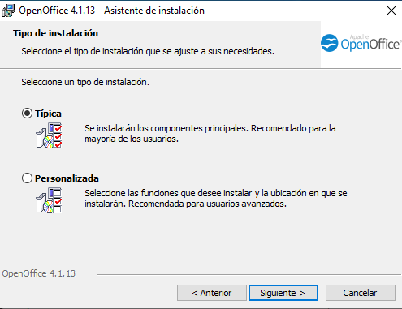

1ª Descargamos el
paquete ofimático desde
la web oficial de LibreOffice
2ª Ejecutamos el instalador
y seguiremos los
pasos pertinentes
3ª Escribiremos nuestro
nombre de usuario
y si se utilizará para
una organización o no
 4ª Seleccionamos el tipo
4ª Seleccionamos el tipo
de instalación que queremos
5ª Seleccionamos los paquetes
que queremos instalar
y desinstalar